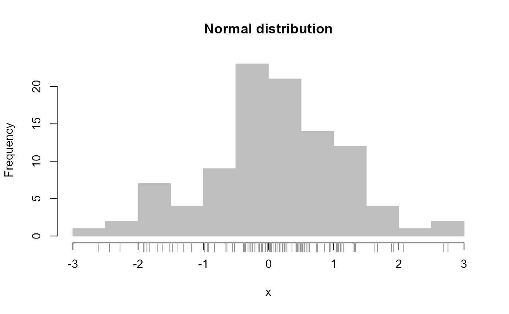
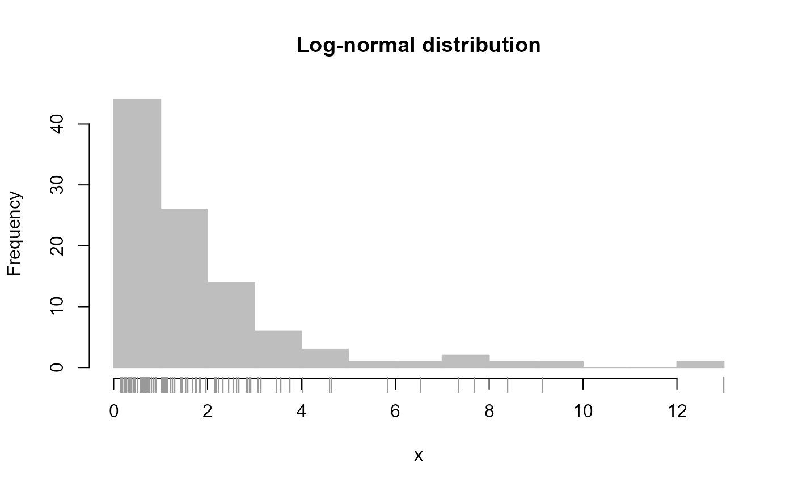
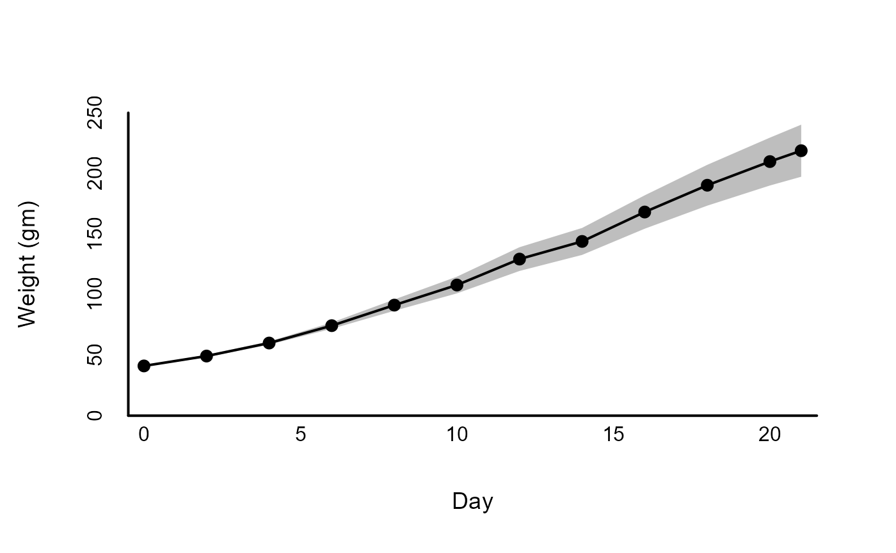
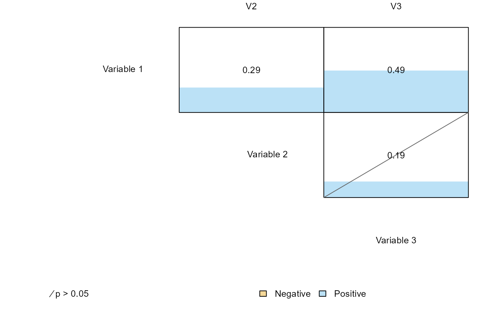

Plotting.RmdOne can quickly plot a histogram for a set of values via the ‘plot_histogram’ function, which uses by default the Freedman-Diaconis rule for determining bin size (which works somewhat better then base R’s default using Sturge’s rule):
# Simulate data from normal distribution
x <- rnorm(100)
plot_histogram(x, main = 'Normal distribution', new = FALSE )
# Simulate data from log-normal distribution
y <- exp( rnorm(100) )
plot_histogram(y, main = 'Log-normal distribution', new = FALSE )
A common figure type in psychology is a plot of a measure central tendency and its variation (e.g., means and 95% confidence intervals), shown over a grouping factor. Such a figure can be created quickly using the ‘draw_dots’ function:
# Example data examining effect of diet on early growth of chicks
data("ChickWeight")
# Create descriptive summary by Diet for final day
dtf_obs <- stats_by_group(
ChickWeight[ChickWeight$Time == 21, ],
'weight', 'Diet',
# Sample size, mean, standard error of the mean,
# and associated uncertainty intervals
statistics = c( 'N', 'M', 'SE', 'UI' )
)
dtf_obs$X <- 1:nrow( dtf_obs )
# Plot means and 95% confidence intervals for weight
# First create blank plot
xl <- c( .5, 4.5 )
yl <- c( 120, 340 )
plot_blank( xl, yl )
# Add estimates and error bars
draw_dots( dtf_obs, columns = c( 'X', 'M', 'UI_LB', 'UI_UB' ) )
# Add borders, labels, and axes
draw_borders_and_labels(
xl, yl, labels = c( 'Diet', 'Weight at 21 days (gm)' )
)
draw_axes( seq( yl[1], yl[2], 40 ), side = 2, line = -1.25, cex = 1 )
draw_axes( 1:4, 'Diet ' %p% 1:4, side = 1, line = -1.25, cex = 1 )A useful variant of figures summarizing estimates and error bars is the forest plot, used commonly to summarize the results of a meta-analysis. In its most basic form, a forest plot reports a set of estimates and associated error bars for different variables:
overall_m <- mean( dtf_obs$M )
# P-value based on two-tailed one-sample t-test
dtf_obs$P_value <- pt(
abs( dtf_obs$M - overall_m ) / dtf_obs$SE, dtf_obs$N - 1, lower.tail = FALSE
) * 2
# Identify significant differences
dtf_obs$Significant <- dtf_obs$P_value < .05
# Create nicely formatted results
dtf_obs$Results <-
round( dtf_obs$M ) %p% ' [' %p%
round( dtf_obs$UI_LB ) %p% ', ' %p% round( dtf_obs$UI_UB ) %p%
']; p = ' %p% format( round( dtf_obs$P_value, 3 ), nsmall = 3 )
plot_forest(
dtf_obs[, c('M', 'UI_LB', 'UI_UB')],
# X-axis
xlim = c(140, 340),
labels_x = seq( 140, 340, 40 ),
title_x = 'Estimated mean',
# Y-axis
labels_y = 'Diet ' %p% 1:4,
# Add results next to each error bar
labels_estimates = dtf_obs$Results,
labels_estimates_limit = overall_m,
# Show overall mean
vert_grid = overall_m,
# Indicate which mean significantly differs
point_type = replace_cases( dtf_obs$Significant, c( F, T ), c( 19, 21 ) ),
# Size of points, x/y-axis labels, and title
text_size = c( 1.25, .8, 1 ),
# Specify margin (in inches) to ensure nice visibility
margin = c( .5, .5, .25, 1.5 ),
new = FALSE
)Another common figure in psychology is a line plot displaying change in a variable over time. We can quickly create such a figure using the ‘draw_line’ function:
# Create descriptive summary by time collapsing over diet
dtf_obs <- stats_by_group(
ChickWeight,
'weight', 'Time', statistics = c( 'M', 'UI' )
)
# Plot means and 95% confidence intervals for weight
# First create blank plot
xl <- c( -.5, 21.5 )
yl <- c( 0, 250 )
plot_blank( xl, yl )
# Add estimates and error bars
draw_lines(
dtf_obs, columns = c( 'Time', 'M', 'UI_LB', 'UI_UB' ), col.eb = 'grey'
)
# Add borders, labels, and axes
draw_borders_and_labels(
xl, yl, labels = c( 'Day', 'Weight (gm)' )
)
draw_axes( seq( yl[1], yl[2], 50 ), side = 2, line = -1.25, cex = 1 )
draw_axes( seq( 0, 20, 5 ), side = 1, line = -1.25, cex = 1 )
Often we will need to plot multiple trajectories over time for separate groups. The ‘draw_by_groups’ function streamlines the process of plotting separate lines by different groups.
# Create descriptive summary across both time and diet
dtf_obs <- stats_by_group(
ChickWeight,
'weight', c( 'Time', 'Diet' ),
statistics = c( 'M', 'UI' )
)
dtf_obs$X <- dtf_obs$Time +
replace_cases( dtf_obs$Diet, 1:4, c( -.6, -.2, .2, .6 ) )
dtf_obs$col <-
replace_cases( dtf_obs$Diet, 1:4, palettes( index = 1:4 ) )
# See the package 'dplyr' for a concise way to create these summaries
# Plot means and 95% confidence intervals for weight
# First create blank plot
xl <- c( -1, 22 )
yl <- c( 0, 350 )
plot_blank( xl, yl )
draw_by_group(
dtf_obs, 'Diet', 1:4,
draw_fun = draw_lines,
columns = c( 'X', 'M', 'UI_LB', 'UI_UB' ),
arrow = TRUE,
pch = 21,
aes = c( col = 'col', col.eb = 'col', bg = 'col' )
)
# Add borders, labels, and axes
draw_borders_and_labels(
xl, yl, labels = c( 'Day', 'Weight (gm)' )
)
draw_axes( seq( yl[1], yl[2], 50 ), side = 2, line = -1.25, cex = 1 )
draw_axes( seq( 0, 20, 5 ), side = 1, line = -1.25, cex = 1 )
legend(
0, 340, 'Diet ' %p% 1:4, fill = palettes( 1:4 ), bty = 'n'
)The function ‘plot_correlations’ is a quick way to create a figure summarizing the set of correlations over multiple variables along with useful information on the magnitude and statistical significant of each relationship:
# Simulate data from a multivariate normal with correlated values
Sigma <- rbind(
c( 1.0, 0.2, 0.5 ),
c( 0.2, 1.0, 0.1 ),
c( 0.5, 0.1, 1.0 )
)
x <- MASS::mvrnorm( 100, rep( 0, 3 ), Sigma = Sigma )
colnames(x) <- 'V' %p% 1:3
x <- data.frame(x)
plot_correlations(
x, labels = list( 'Variable ' %p% 1:3, 'V' %p% 1:3 ), new = FALSE
)